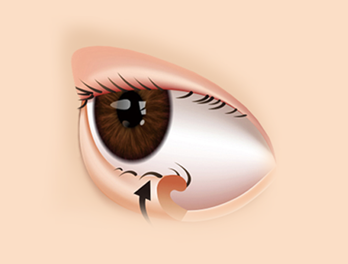

안성형
에스안과
시력교정
노안/백내장
망막/황반변성
안구건조증
녹내장
소아안과
안성형
예약/상담
안검내반
안검하수
눈꺼풀처짐
눈물흘림
안검내반
안검내반
안과전문의가 눈의 기능요소를
고려해
치료합니다.
안검내반
이란?
기능적 불편함을 초래하는 질환
정확한 원인파악과 치료가 중요합니다.

다양한 원인에 의하여 눈커풀테가 안으로
말려 들어가 속눈썹을 찌르는 질환
선천적 또는 노화로 인해 발생합니다. 속눈썹이 각막을 찔러 이물감,
눈물, 눈곱, 눈부심이 증상이 나타나며 동공에 지속적인 자극으로
각막에 상처가 생기면서 시력저하가 발생하기도 합니다.
안검내반의 주요 증상
안검내반은
선척적인 원인에 의해 발생
하는 경우가 가장 많고,
나이가 들면서 눈꺼풀
근육이 약해지면서
속눈썹이 안으로 말려 눈썹 찔림이 생깁니다.
01
눈 주변의 피부의
탄력이 떨어집니다.
02
눈을 자주 비비는
습관이 있다.
03
눈이 쉽게
건조해집니다.
04
눈물을 자주
흘리곤 합니다.
05
결막염과 같은
안구질환이 자주 발생한다.
06
햇빛 보는 것을 힘들어
하며 눈부심이 심하다.
07
눈에 이물감이
느껴져 눈을 비빕니다.
안검내반 치료방법
안검내반의
개개인의 원인과 증상에 따라 치료가 진행
되고 있기 때문에
안과전문의와 충분한 상담을 통하여 치료하는 것이 바람직합니다.
속눈썹 제거
전기 분해술
레이저모낭 파괴술
수술적 치료 방법
안과에서 하는 미용적 눈수술
괜찮을까요?
안과성형은 단순히 미용상 목적이 아니기 때문에
안구의 기능과 상태를 정확히 파악
하고 치료 할 수 있는
안과전문의에게 치료를 받아야 기능적 문제와 외관상 문제를 안전하고 확실하게 치료
할 수 있습니다.
눈 구조를 정확하게
파악하여
개인 맞춤
수술
로
체계적인수술
미용안성형 안과전문의
풍부한 임상 경험
을
바탕으로한
최적의수술
안구의 기능을 고려한
정확한 수술로
부작용을
최소화
한
안전한 수술